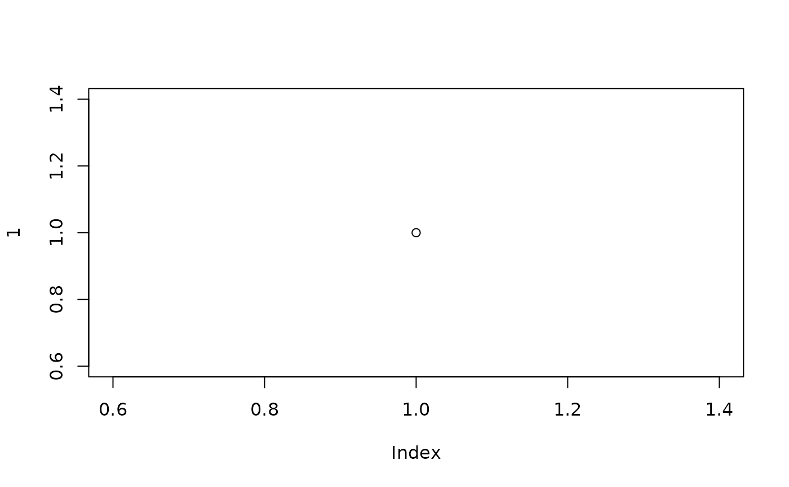

This interface wraps the base setHook() function to provide a return
value that makes it easy to undo.
Usage
set_hooks(hooks, action = "append")
remove_hooks(hooks)
Arguments
- hooks
a named list of hooks - each hook can either be a function or
a list of functions.
- action
"replace", "append" or "prepend"
Examples
new1 <- list(before.plot.new = function() print("Plotted!"))
new2 <- list(before.plot.new = function() print("Plotted Again!"))
set_hooks(new1)
set_hooks(new2)
plot(1)

#> [1] "Plotted!"
#> [1] "Plotted Again!"
remove_hooks(new1)
plot(1)
#> [1] "Plotted Again!"
remove_hooks(new2)
plot(1)